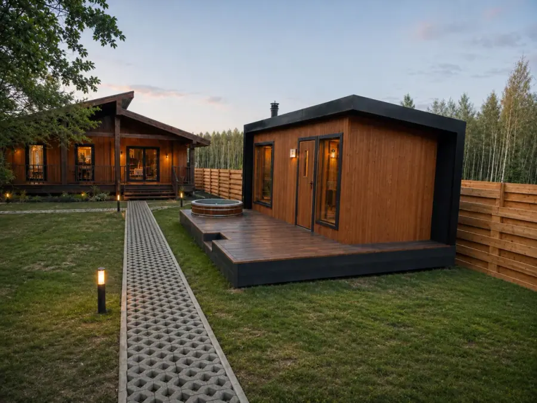

Путеводитель гостя
Ваш отдых,
по-барски.
Меню, баня и чан, прогулки и ответы на вопросы — под рукой, пока вы в «Барских полях».

В гостях у природы
Добавьте приятного
Можно заказать
Выберите услугу. Время и стоимость подтвердит администратор в чате.
К столу, без хлопот
Меню нашей кухни
Такого блюда в меню нет. Попробуйте другое название.
Чтобы всё было понятно
О доме и территории
Оглянитесь вокруг
Карта территории
Найдите свой дом на карте. Нажмите на дом или место, чтобы узнать больше.
Хорошо отдохнули?
Поделитесь впечатлениями. Ваш отзыв поможет другим гостям познакомиться с «Барскими полями».